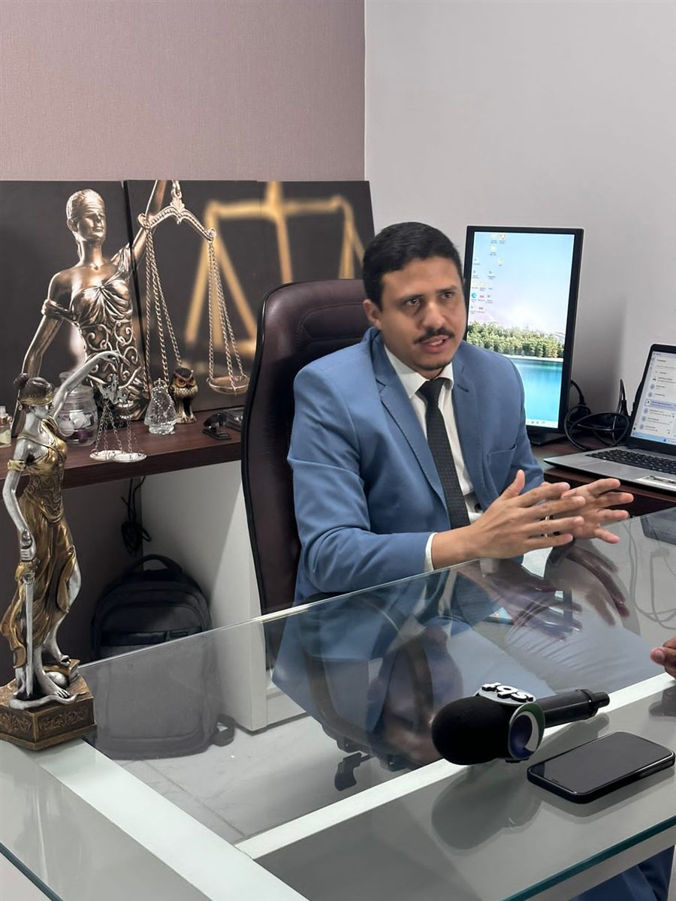

Advocacia criminal · Maceió, Alagoas
Defesa técnica,
do primeiro depoimento
ao último recurso.
O escritório Marcelo Medeiros Advogados Associados atua em Maceió desde 2014, dedicado à advocacia criminal e ao acompanhamento de cada etapa do processo penal.
- Desde
- 2014
- Registro
- OAB/AL nº —
- Telefone
- (82) 98173-9907

Áreas de atuação
O processo penal, fase a fase.
Cada momento do processo pede uma providência diferente. Veja em qual etapa você ou sua família está e fale diretamente sobre ela.
-
I
Investigação e prisão
Acompanhamento em delegacia de polícia
Acompanhamento jurídico durante os procedimentos policiais, para que os direitos do cliente sejam respeitados desde o primeiro momento.
Audiência de custódia
Representação perante a autoridade judicial, com análise da legalidade da prisão e defesa dos direitos fundamentais.
Violência doméstica
Representação jurídica em casos de violência doméstica, para qualquer pessoa, independentemente do gênero.
-
II
Liberdade
Liberdade provisória
Pedido fundamentado para que o cliente responda ao processo em liberdade.
Relaxamento de prisão
Atuação diante de prisões que não observaram os requisitos legais.
Revogação de prisão preventiva
Pedido de revogação com base na presunção de inocência e na ausência dos requisitos da preventiva.
Habeas corpus
Impetração em defesa da liberdade contra prisões ilegais ou arbitrárias.
Diminuição do valor da fiança
Pedido de redução da fiança arbitrada.
-
III
Processo
Audiência de instrução criminal
Presença e representação nas audiências, buscando o esclarecimento dos fatos.
Reunião com clientes e familiares
Atendimento presencial no escritório para explicar o andamento do caso.
-
IV
Recursos
Recurso de apelação
Recursos contra decisões desfavoráveis, nas instâncias cabíveis.
Revisão criminal
Revisão de condenações, com base no devido processo legal e na ampla defesa.
O escritório
Advocacia personalizada, pensada com estratégia.
O escritório foi fundado pelo advogado Marcelo Medeiros, em Maceió, com a proposta de uma advocacia personalizada. Para defender bem o direito do cliente, além do conhecimento técnico, é preciso enxergar cada caso de forma estratégica.
Além da área criminal, o escritório atua na advocacia para sindicatos e associações de classe, em causas coletivas como ações civis públicas. Marcelo Medeiros é convidado com frequência por rádios, TVs e jornais para comentar temas da advocacia criminal.
Na mídia
Conteúdo informativo.
Crime de dano ao patrimônio público
IPODECAST: Leandro Santos e Marcelo Medeiros
Contato
Fale diretamente com o advogado.
- Endereço
- Empresarial Humberto Lobo
Av. Menino Marcelo, 9350, Sala 1015
Serraria, Maceió – AL, 57046-000 - Telefone e WhatsApp
- (82) 98173-9907
- Horário
- A confirmar